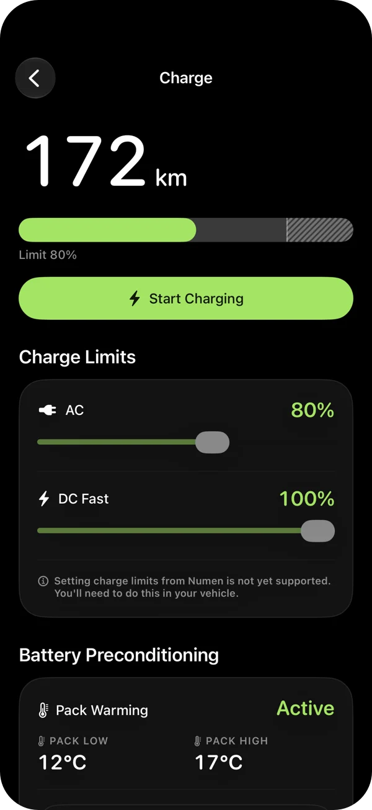
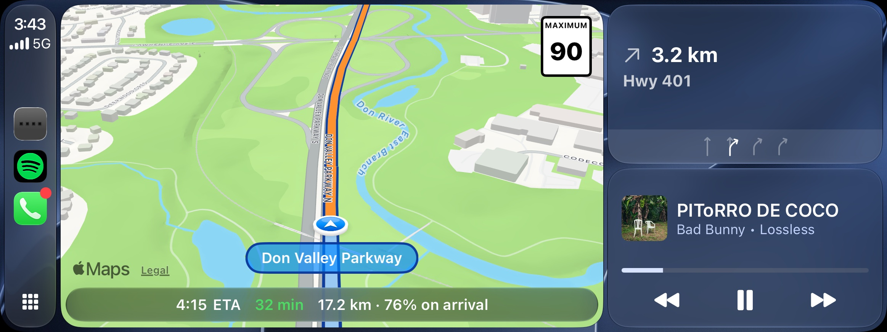
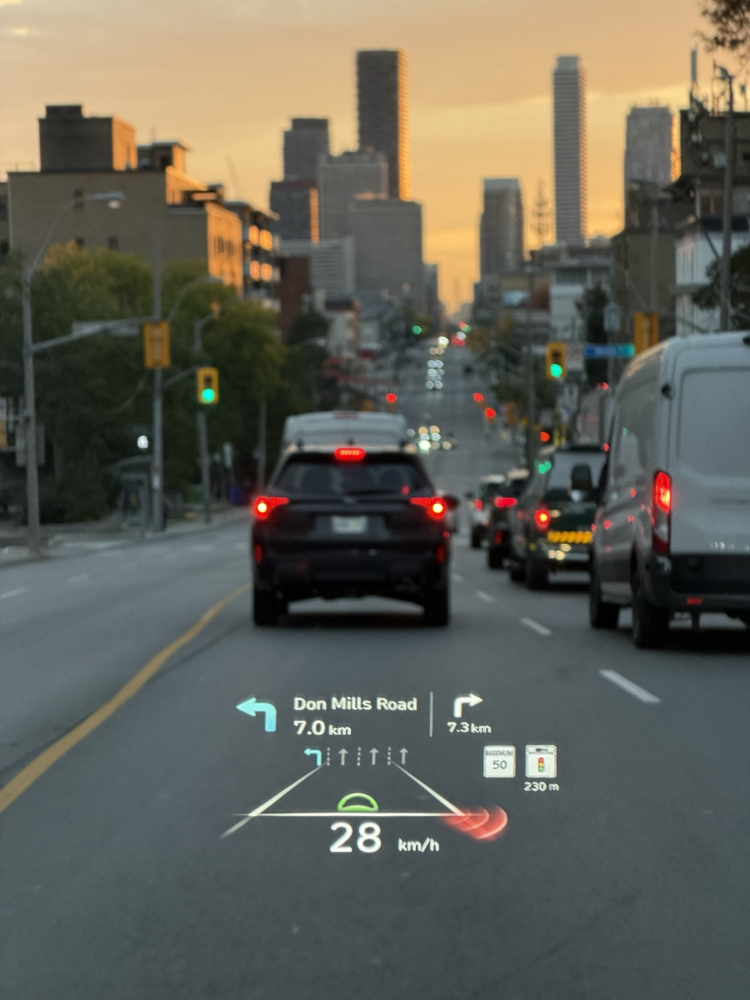
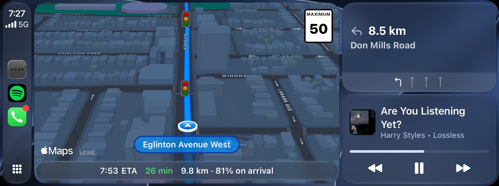
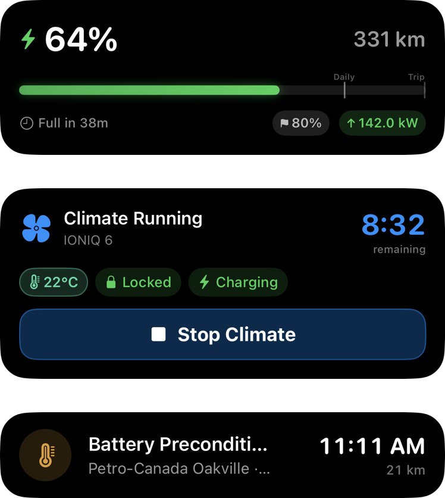

Your EV, From Phone to Dash.
Numen is a companion app for Hyundai and Kia e-GMP EVs. Remote control, live charging data, and CarPlay directions for a fully integrated experience.
PlatformsiPhone · CarPlay · Watch


Your Car, From Anywhere.
Check on the car and control it without walking out to it.
- Remote Commands
Lock, climate, charging, horn and lights from anywhere, secured with Face ID.
- Surround View
Access 360° surround view imaging from anywhere in the world.
- Rich Interface
Range, charge and climate at a glance, with your car shown in its exact paint colour.

Every Charge, Recorded.
Track every session with real charge power, recorded minute by minute from the car itself.
- Power Curves
Review energy added, charge time and peak power for every session.
- Complete History
Capture every charge, even the ones that happen while you're away.
- Real Charge Power
Measure the power the car actually receives, not an estimate.

Navigation Built Around Range.
Plan any trip with live traffic, lane guidance and charging stops tailored to every leg.

Smart Charging Stops
Charge only as much as the next leg needs, never a flat 80%.
Favourite Routes
Get your preferred route first, learned from how you drive.
Lanes and Incidents
See every lane ahead, plus crashes, closures and construction.
Battery Warm-Up
Arrive at DC fast chargers ready to charge at full speed.
Directions Where You're Already Looking.
View turn-by-turn directions, street names and lane guidance right on your instrument cluster and head-up display.


Works With Bluelink Alone.
Unlock live data and in-car features with two optional adapters.
Harness Adapter
Install the Ioniq5_CAN harness behind the head unit, running the Numen WiCAN firmware.
Get the Harness Kit ↗Beyond the App.
Access your car's live status from your Lock Screen, Home Screen and wrist.
- Live Activities
Follow charging, climate and battery warm-up in the Dynamic Island and CarPlay.
- Widgets and Apple Watch
Check status and send commands without opening the app.
- Shortcuts and Walk-Away Lock
Run commands with Siri, and lock the car automatically as you walk away.

Join the Early Beta.
Anyone can download Numen from TestFlight. Spots open a few at a time, so you may wait in line for a bit. All you need is an iPhone on iOS 27.